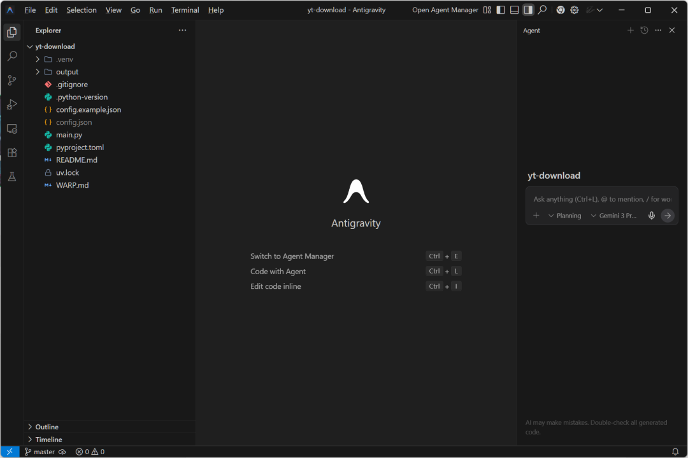
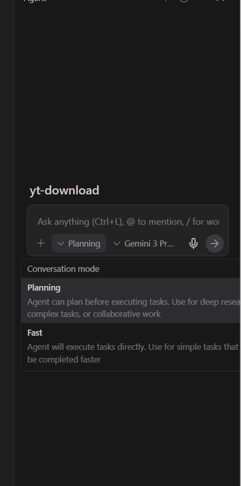
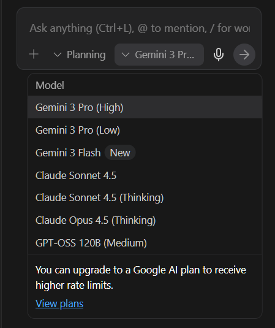
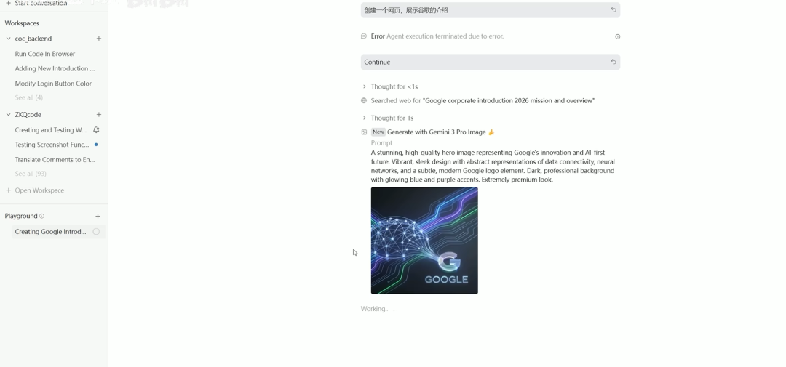

如果你最近在关注 AI 编程工具，一定听过 Google Antigravity 的名字。不少人初见它会说：“这不就是套壳的 VS Code 吗？” 但用过才知道，这工具可远远被低估了 —— 谷歌不仅把最新的 Gemini 3 Pro、付费才能用的 Claude 4.5 Opus 塞进了这个 IDE，更颠覆了传统写代码的逻辑：以前是你写代码、AI 提建议，现在 AI 是 “员工”，你是 “经理”，它能读懂项目、操作控制台，甚至自己控制浏览器干活。
作为刚用它时踩过不少坑的 “过来人”，今天我把实战中总结的 6 个保姆级技巧整理好了 —— 不仅教你怎么用，还告诉你怎么省钱、怎么高效 “压榨” 这个虚拟员工，新手也能直接上手！

一、先搞懂 2 个模式：选错效率直接减半
刚进 Antigravity，你会看到 “Plan 模式” 和 “Fast 模式”，这俩可不是随便选的，对应不同场景，选对了能省一半时间。
✅ Plan 模式：AI 先 “想明白”，再动手开发
适合场景：从零设计功能、添加全新模块（比如给网站加一个用户登录系统）。
这个模式下，AI 会先像资深程序员一样帮你 “思考”：先列开发计划，从需求拆解到步骤分工，一条条写清楚。你要是觉得计划有问题，能点 “Comment” 加备注，也能在对话框里跟 AI 反复沟通修改 —— 比如你说 “这里要加个数据校验步骤”，AI 就会调整计划。
等你觉得计划没问题了，只需要说一句 “开始开发”，AI 就会照着计划写代码，完全避免 “AI 瞎写一通，你反复修改” 的麻烦。
✅ Fast 模式：简单需求，快准狠搞定
适合场景：执行小操作（比如给代码加注释、把按钮颜色从红色改成绿色、修复一行语法错误）。
这种情况就不用麻烦 Plan 模式了 —— 直接给 AI 发指令，它秒级响应，不用等思考、列计划，主打一个 “高效省事”。

二、混合模型策略：前端用它、后端用它，效率翻倍
Antigravity 里谷歌给了两类模型：Gemini 3 系列、Claude Opus/Sonnet，别只用一个，搭配着用才是王道。
🔍前端开发：锁死 Gemini 3
为啥？因为谷歌的视觉能力目前是 T0 级别的！
比如你要设计一个网站页面，Gemini 3 会自动打开浏览器操作，还能实时截图确认效果 —— 更绝的是它能 “自动审美”，设计出来的前端样式、配色基本不用再调；要是换其他模型，光调整风格就得折腾半天。
🔍后端开发：优先 Claude
Claude 模型的强项是 “逻辑严谨”—— 虽然视觉能力一般，但写后端代码时，它能把数据交互、逻辑判断做得很扎实，很少出漏洞。
简单说：前端靠 Gemini 3 省设计时间，后端靠 Claude 保代码质量，前后端搭配，开发速度直接提上来。

三、额度避坑：3 个池子 + 1 个隐藏规则，别浪费钱
用 AI 工具绕不开 “额度”，Antigravity 的额度规则有点特殊，搞懂了能少花冤枉钱。
1. 额度分 3 个独立池子
Pro 版本池：所有 Gemini 3 Pro 相关的使用，都从这里扣额度；
Flash 版本池：只有 1 个 Flash 模型，额度单独算；
Claude 池：不管是 Opus 还是 Sonnet，都共用这个池子的额度。
2. GPT 额度的 “隐藏规则”
还有个 GPT 额度很有意思：它不单独算，只要 3 个池子中有一个还有剩余额度，你就能用 GPT；但如果 3 个池子全空了，GPT 也用不了。
四、设好 “员工手册”：1 步省去 80% 重复沟通
很多新手会忽略 “规则系统”，但这步其实是省时间的关键 —— 相当于给 AI 定 “员工手册”，让它不用你反复叮嘱就知道怎么干活。
规则分两类：
🌐Global（全局规则）：你的 “个人习惯” 全写上
比如你喜欢代码用单引号、所有函数必须加注释、变量名用中文（或英文），都可以在这里设置。设置一次，之后所有项目 AI 都会自动遵守，不用每次开发都强调 “我要单引号”。
📂Workspace（工作区规则）：项目专属要求
每个项目的框架、接口可能不一样 —— 比如你这个项目用 React 框架、要调用微信支付接口，就把这些写在工作区规则里。AI 会照着这些要求写代码，避免出现 “用错框架”“接口调用错误” 的问题。
更方便的是，你还能把常用指令封装成快捷键：输入 “/” 就能调用规则，真正实现 “一次配置，永久偷懒”。

五、Manager 模式：从 “写代码” 到 “管项目”，这才是核心
最后要讲的，是 Antigravity 的灵魂功能 ——Manager 模式。打开这个模式，你就从 “程序员” 变身 “项目经理”：眼前看不到密密麻麻的代码，只有一个个清晰的任务。
它分 3 个核心功能，用熟了能彻底改变你的开发方式：
1. Playground（游乐场）：测试开发不翻车
想试个新功能（比如写个贪吃蛇小游戏、做个简易时钟），但怕影响现有项目？就在 Playground 里搞 —— 这里相当于 “沙盒环境”，随便折腾，做完觉得没问题，再点 “保存转正”，把项目移到正式区。
2. Workspace（正式工作区）：复杂项目在这里落地
所有 “转正” 的项目都存在这里，也能手动新建项目。比如你要开发一个完整的电商小程序，就把需求、规则都配置好，在 Workspace 里推进 ——AI 会按照计划一步步执行，进度清晰可见。
3. Inbox（收件箱）：AI 主动 “汇报工作”
这个功能像你的 “工作邮箱”：AI 会在这里跟你汇报项目进展 —— 比如 “今天完成了商品列表页开发，测试通过率 100%”“下一步计划开发购物车功能”，甚至会告诉你开发中的收益、效果（比如 “这个模块比手动开发节省了 2 小时”）。
等你掌握了这套流程，才算真正用到了 Antigravity “智能体优先” 的威力 —— 不用再自己一行行写代码，而是指挥 AI 把活干好。
六、Manager 模式：从 “写代码” 到 “管项目”，这才是核心
最后说两句
Google Antigravity 确实在重新定义我们和代码的关系：以后程序员可能不再是 “写代码的人”，而是 “管理 AI 开发的项目经理”。
不过它也不是完美的，我在使用中也踩过不少坑 —— 比如某些场景下 AI 会理解错需求、额度消耗比预期快等。下一期我会专门整理 “避坑指南”，帮大家避开这些常见问题。
如果你已经开始用 Antigravity 了，欢迎在评论区聊聊：你觉得最实用的功能是哪个？有没有踩过什么坑？没试过的朋友也可以收藏这篇，下次用的时候对照着操作～
别忘了点赞 + 关注，持续更新好内容～